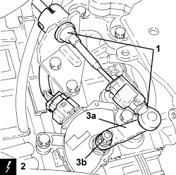
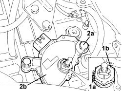
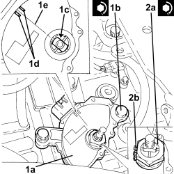
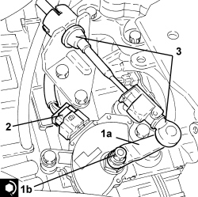

2130B48 GEAR SELECTOR ON AUTOMATIC TRANSMISSION - R R
- Path
- Procedures > 21 GEARBOX UNIT > 2130 AUTOMATIC TRANSMISSION WITH DIFFERENTIAL > 2130B AUTOMATIC TRANSMISSION COMPONENTS > 2130B48 GEAR SELECTOR ON AUTOMATIC TRANSMISSION - R R
- Kind
- repair procedure (removal / refitting; the operation number is the code)
- Applies to
- engines: 2.2, 2.4 JTD 20v; all production periods; only with equipment: AUTOMATIC TRANSMISSION
- Interactive page
- https://sloeber94.github.io/elrnDB-fCrm/en/#/194002329
Applies to: engines: 2.2; all production periods
 Removing
Removing
 Refitting
RefittingOp. 5530B52 BATTERY SUPPORT/DRIP TRAY - R.R
1. Disconnect the gear selection cable from the gear selector and reaction bracket.
2. Disconnect the electrical connection from the gear selector on the automatic transmission.
Description | Connector | |
|---|---|---|
2 | Automatic transmission solenoid valves |
3. Undo nut (3a) and remove lever (3b) from the gear selector on the automatic transmission.

Applies to: engines: 2.2; all production periods
1. Open the retaining tabs (1a) and unscrew nut (1b) securing the speed selector to the selection pin.
2. Undo bolts (2a) and remove the gear selector on the automatic transmission (2b).

Applies to: engines: 2.2; all production periods
Refitting
Removing1. Place the gear selector on the automatic transmission (1a) in its housing and secure it tightening the bolts (1b) to the recommended torque.
Component | Fastening | dia | Value (daNm) | Validity |
|---|---|---|---|---|
Automatic transmission gear selector | Bolt | M8 | (automatic gearbox side) 2.5 | 2.2 CAE |
2. Tighten nut (2a) securing the gear selector to the selection pin and secure with the tabs (2b).
Component | Fastening | dia | Value (daNm) | Validity |
|---|---|---|---|---|
Automatic transmission gear selector | Nut | - | (selection pin side) 1.4 - 1.8 | 2.2 CAE |

Applies to: engines: 2.2; all production periods
1. Position the lever (1a) in its housing on the gear selector and secure it by tightening the nuts (1b) to the recommended torque.
Component | Fastening | dia | Value (daNm) | Validity |
|---|---|---|---|---|
Automatic transmission gear selector lever | Nut | M8 | (gear selector side) 1.7 | 2.2 CAE |
2. Connect the electrical connection to the gear selector on the automatic transmission.
3. Connect the gear selection cable to the gear selector and reaction bracket.

Applies to: engines: 2.2; all production periods
Applies to: engines: 2.4 JTD 20v; all production periods
- The gear selector on the automatic transmission is incorporated in the control unit, therefore refer to
Op. 2135B52 ELECTRONIC AUTOMATIC TRANSMISSION ELECTRIC CIRCUIT -ECU MOUNT R R
Topics linked from this page (4)
- 2135B52 ELECTRONIC AUTOMATIC TRANSMISSION ELECTRIC CIRCUIT -ECU MOUNT R R
- 5530B10 BATTERY - R+R
- 5530B52 BATTERY SUPPORT/DRIP TRAY - R.R
- L050 AUTOMATIC TRANSMISSION SOLENOID VALVES